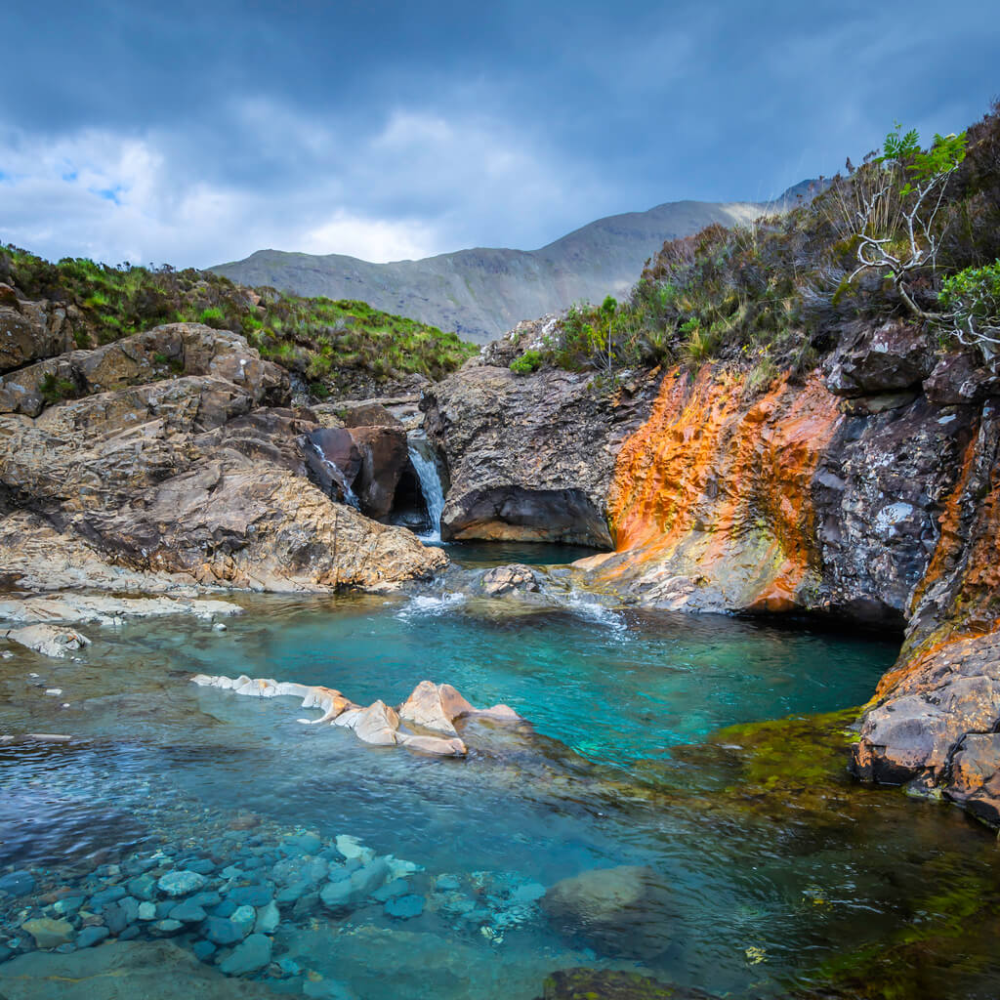
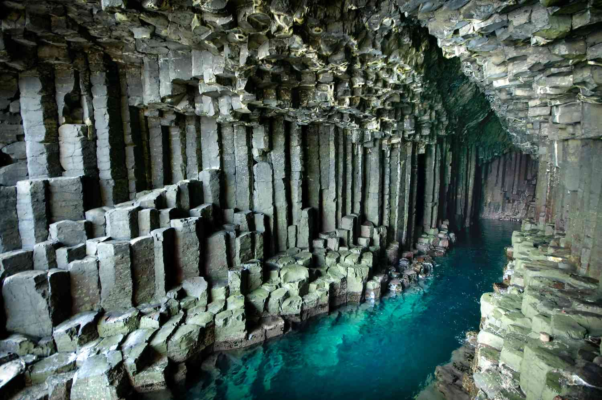
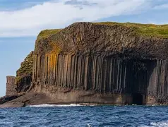
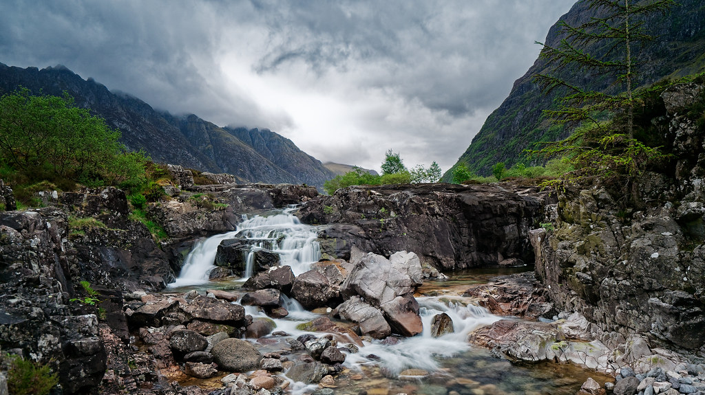
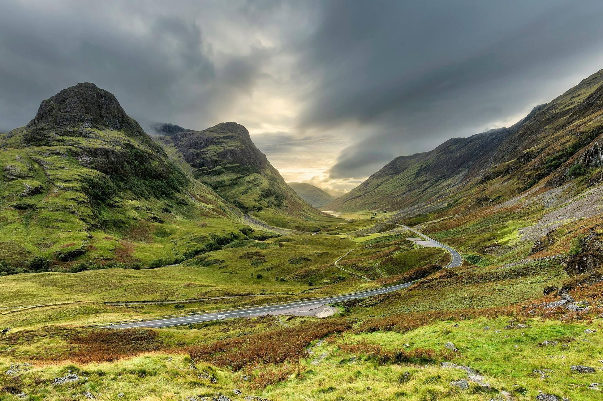
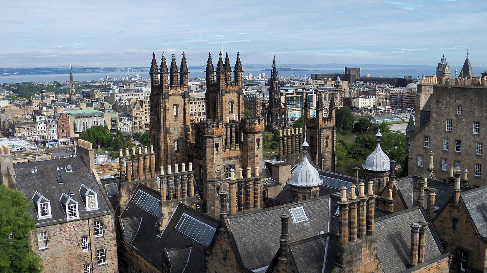
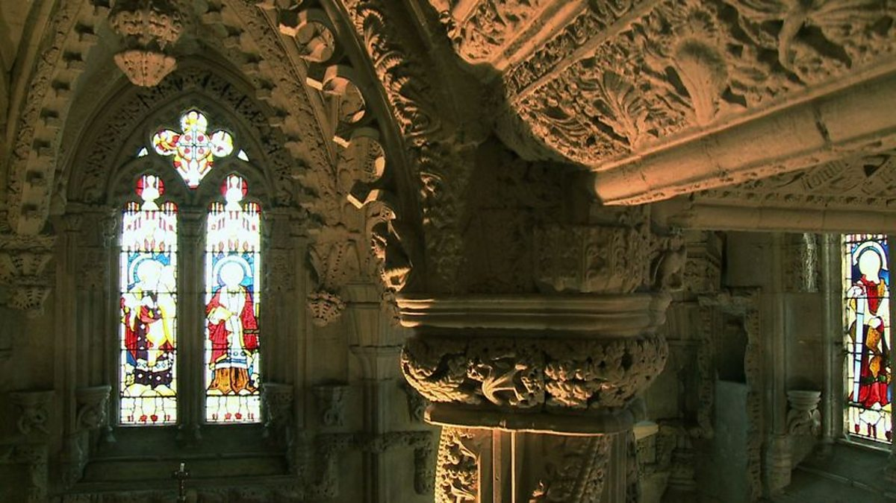
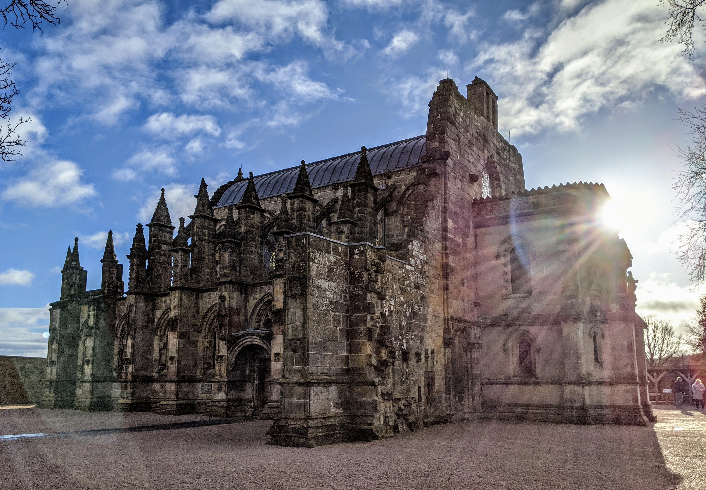

Here You Can Explore Some True Scottish Wonders:
Isle of Skye – Famous for its dramatic cliffs and naturally formed fairy pools.


Fingal's Cave – A natural sea cave with striking columnar basalt formations.


Glencoe Valley – A hauntingly beautiful glen with steep mountains and waterfalls.


Edinburgh Castle – A medieval fortress that defines Scotland’s capital skyline.

Rosslyn Chapel – An ornate chapel famous for its intricate carvings and mysteries.

